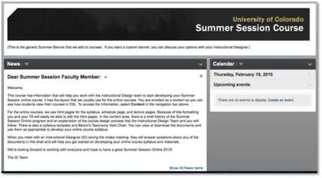
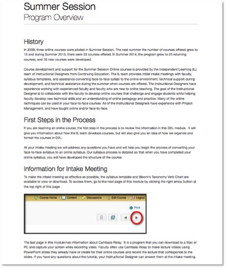

This project was for a “flipped” course I developed for our Summer Session Online faculty. Most of the instructors have not taught an online course before and are tenure faculty and sometimes department chairs. We needed a way to give them background information before we initially met with them to discuss how their face-to-face content could be modified to work in an online environment. One of the main goals of this project was to give them information quickly so it would only take them 10-15 minutes to go through the content. We also asked that they review the content before we met with them.
We felt that this approach was successful because the intake meetings of the faculty who reviewed the content were usually about 30 minutes long. The intake meetings for faculty who did not review the content averaged about 90 minutes.
This page is the homepage of the course in the learning management system, D2L. Faculty were enrolled in a student role in this course to give them the student experience and to allow them to use the D2L tools that students can use in the online courses.

The Program Overview gave the faculty a brief history of the Summer Session Online program , first steps in the course development process, information to prepare for the intake meeting with their instructional designer and instructions on how to access the course content.
